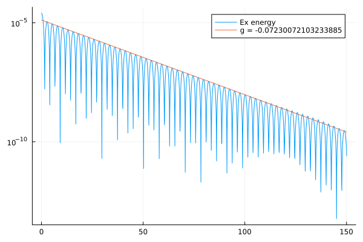

using FFTW
using Plots
using VectorSpin
function main(T)
nx = 119 # mesh number in x direction
nv = 129 # mesh number in v direction
vmin, vmax = -5.0, 5.0 # computational domain [-H/2,H/2] in v
kx = 0.5 # wave number/frequency
xmin, xmax = 0.0, 2π / kx # computational domain [0,L] in x
tildeK = 0.1598 # normalized parameter tildeK
dt = 0.1 # time step size()
nsteps = floor(Int, T / dt + 1.1) # time step number
mesh = Mesh(xmin, xmax, nx, vmin, vmax, nv)
a = 0.001 # perturbation for f
E1 = fft(-1.0 * a / kx * sin.(kx .* mesh.x)) # electric field
epsil = a # perturbation for S
femi1 = 1
femi2 = -1
# spin variables
S1 = zeros(nx)
S2 = zeros(nx)
S3 = zeros(nx)
dS1 = zeros(nx)
dS2 = zeros(nx)
dS3 = zeros(nx)
for k = 1:nx
normx = sqrt(1 + epsil^2) # norm of S
dS1[k] = epsil * cos(kx * mesh.x[k]) / normx
dS2[k] = epsil * sin(kx * mesh.x[k]) / normx
dS3[k] = 1.0 / normx - 1.0
S1[k] = dS1[k]
S2[k] = dS2[k]
S3[k] = 1.0 / normx
end
function maxwellian0(x, v)
vth, femi = 1.0, 1.0
f = (1 / sqrt(pi) / vth) * exp(-(v / vth)^2) * (1 + a * cos(kx * x)) * femi
return f
end
function maxwellian3(x, v)
vth, femi = 1.0, 0.5
f = (1 / sqrt(pi) / vth) * exp(-(v / vth)^2) * (1 + a * cos(kx * x)) * femi
return f
end
f0 = initialize_distribution(mesh, maxwellian0)
f1 = zeros(mesh.nv, mesh.nx)
f2 = zeros(mesh.nv, mesh.nx)
f3 = initialize_distribution(mesh, maxwellian3)
ex_energy(E1, mesh) = sum(abs2.(ifft(E1))) * mesh.dx
t = Float64[]
push!(t, 0.0)
e = Float64[]
push!(e, ex_energy(E1, mesh))
Hv = HvSubsystem(mesh)
He = HeSubsystem(mesh)
H1fh = H1fhSubsystem(mesh)
H2fh = H2fhSubsystem(mesh)
H3fh = H3fhSubsystem(mesh)
for i = 1:nsteps
step!(Hv, f0, f1, f2, f3, E1, dt)
step!(He, f0, f1, f2, f3, E1, dt)
step!(H1fh, f0, f1, f2, f3, S1, S2, S3, dt, tildeK)
step!(H2fh, f0, f1, f2, f3, S1, S2, S3, dt, tildeK)
step!(H3fh, f0, f1, f2, f3, S1, S2, S3, dt, tildeK)
push!(t, i * dt)
push!(e, ex_energy(E1, mesh))
end
t, e
end
T = 150 # final simulation time
t, e = main(T)
plot(t, e, label = "Ex energy", yscale = :log10)
line, g = fit_complex_frequency(t, e)
plot!(t, line, label = "g = $(imag(g))")
